المخرجات الأربعة: الوسط الهندسي، وفيثاغورس وعكسها، والمثلثات الخاصة، والإحداثيات الثلاثية. جميع أسئلة الهيكل المرفق: ٣٨ اختيارًا من متعدد و١٢ مقاليًا، مع صور الكتاب وحلولها. يختار الاختبار من ٢٠ سؤالًا اختياريًا متقاربًا في نوع المهمة، مع سؤال مقالي مشترك لكل نسخة. هذه صفحة تدريب، ولا ترسل درجات إلى LMS.
Download LO-linked question bank · تحميل البنك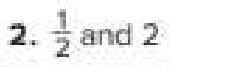
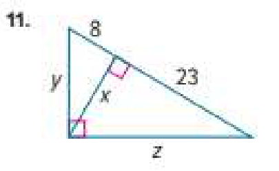
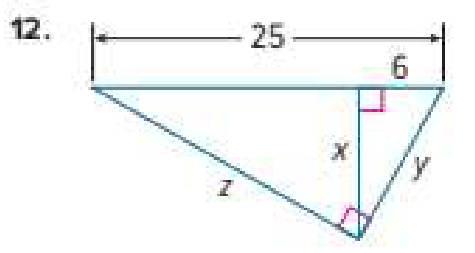
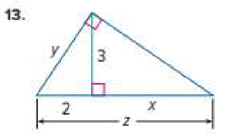
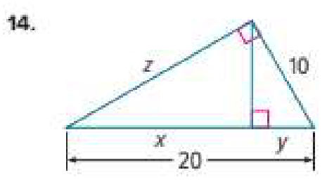
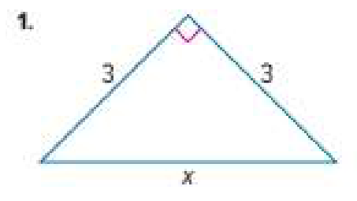
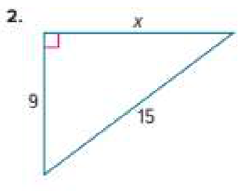
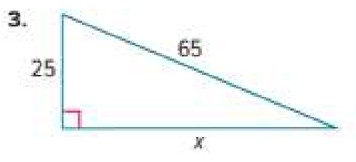
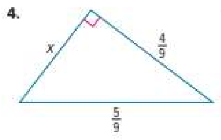
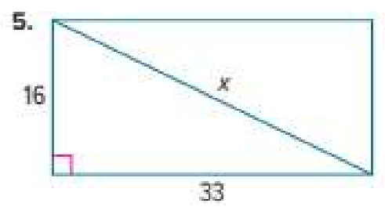
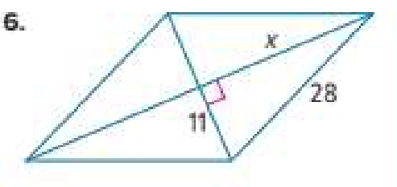
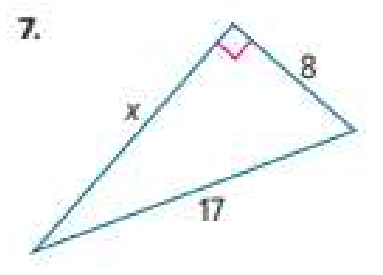
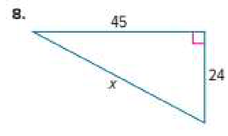
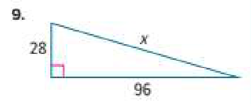
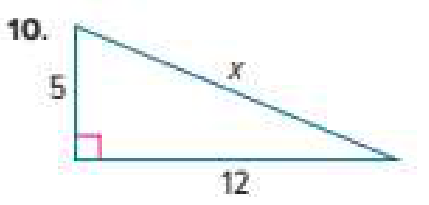
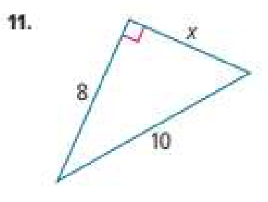
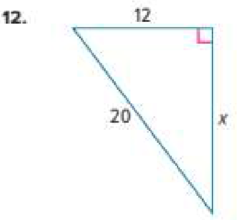
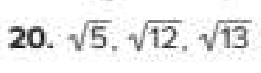
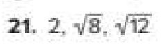
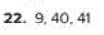
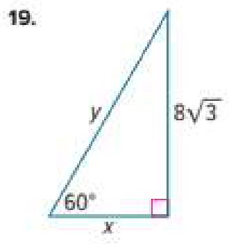
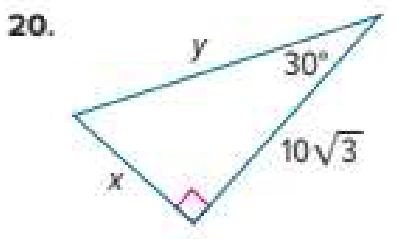
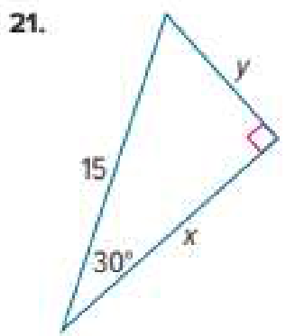
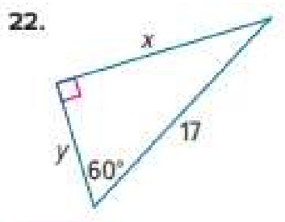
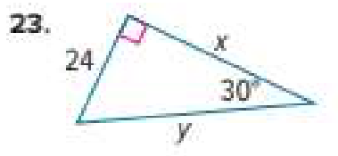
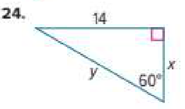
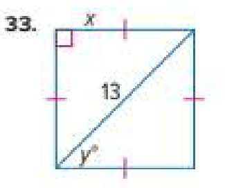
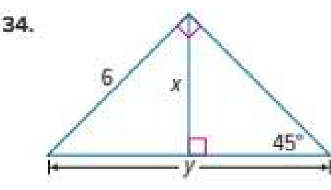
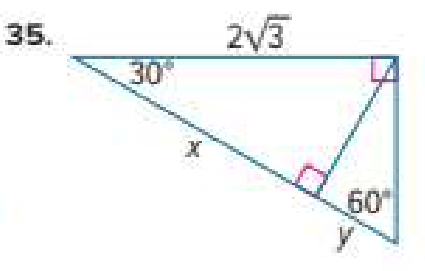
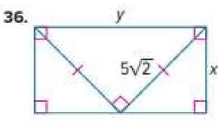
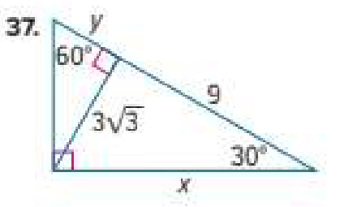
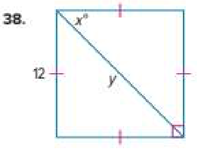
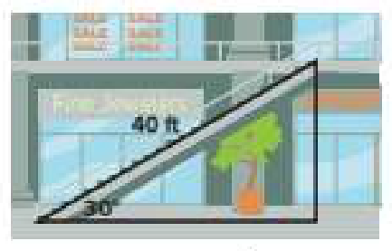
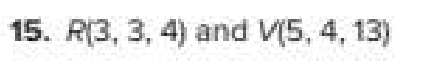
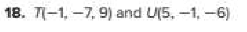
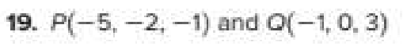
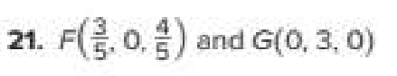
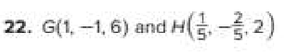
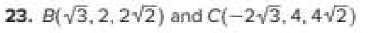
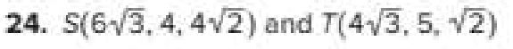